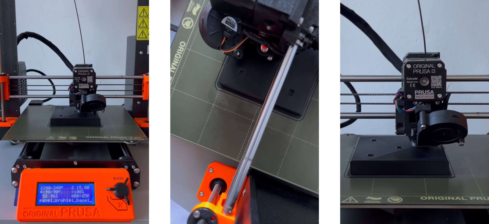
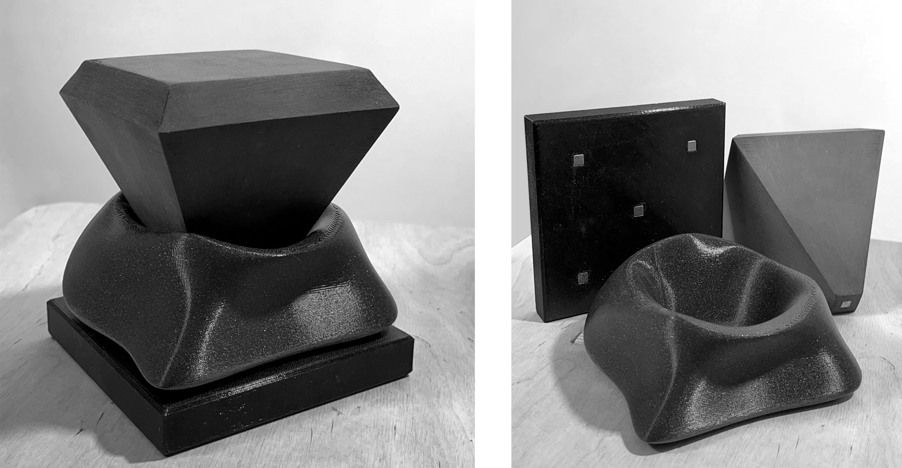

The task of the project was to design a composite object consisting of 3 elements that do not serve any particular function. The designed object had to combine two styles. The two styles — classical and soft — were chosen at random.
The first step was to create a mood board for each style to guide further work. After establishing the visual language, I made several simple sketches that I could rely on during modeling. Initially, I wanted to use streamlined shapes that would "hug" objects of a more classical form. However, I later arrived at the idea of creating a form resembling a faceted stone placed on a pedestal and enveloped by a soft skirt-like shape.
The composition was assembled using 5x5 mm neodymium magnets hidden inside the body, and the elements were 3D printed from glossy black PETG plastic.
